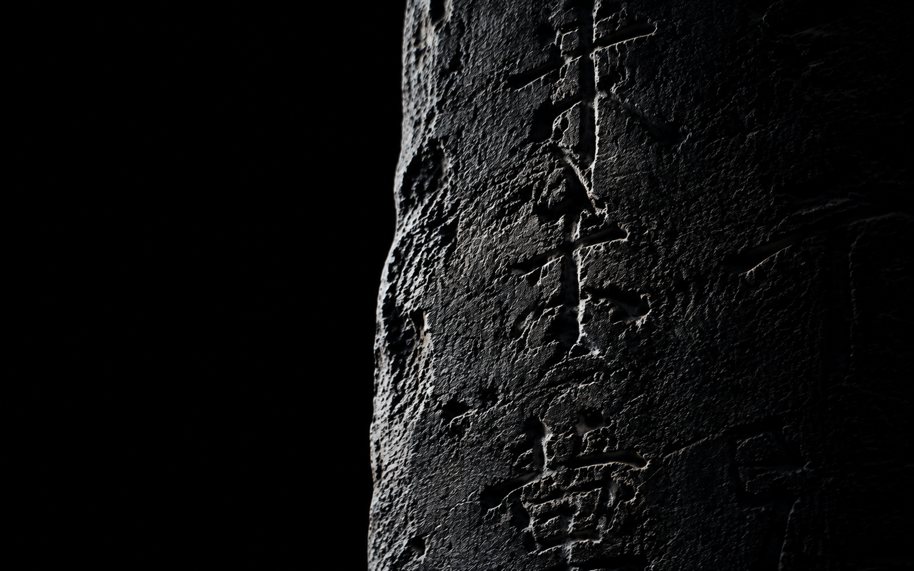
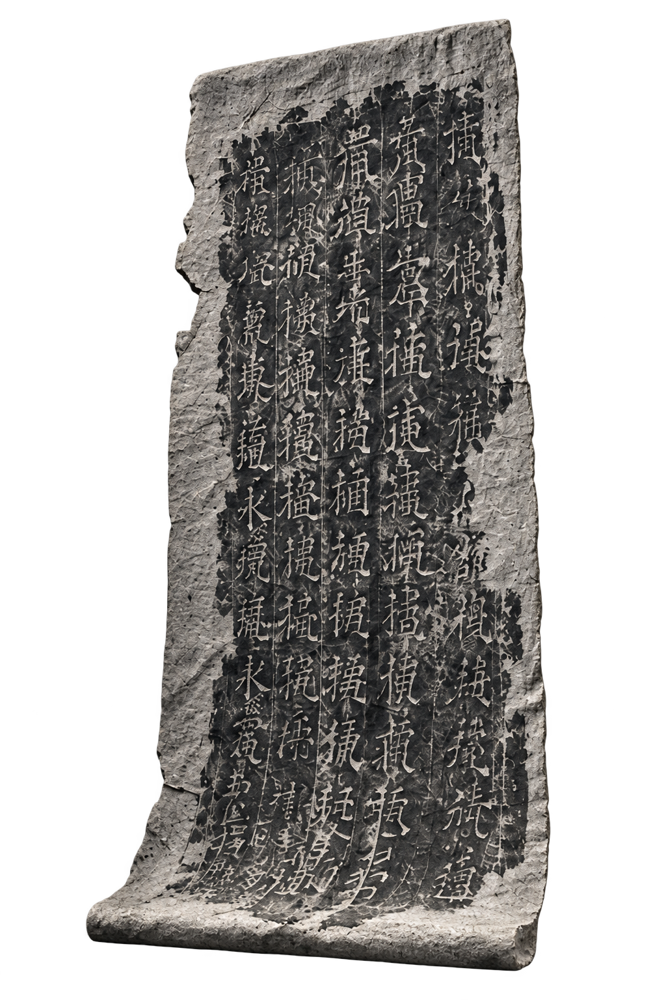
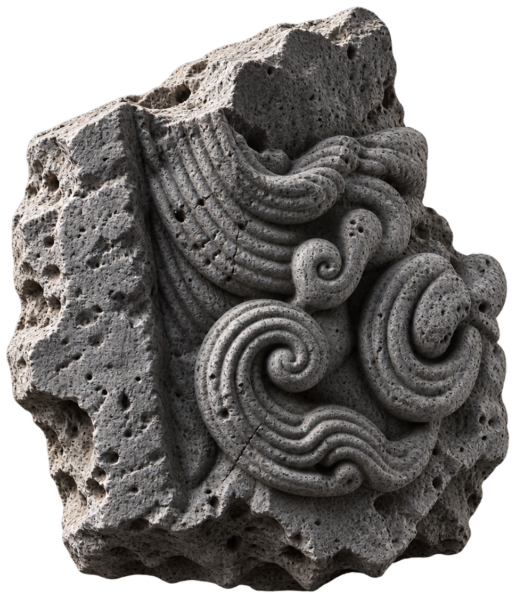

数字艺术项目
碑间
石不言
光替它显现

01 / 痕迹
被刻下的并不是一句话
而是时间穿过物质的方式
碑间不是历史的复制。
它让虚构的石、无法辨认的文字与移动的光，在屏幕上形成另一种遗址。
02 / 墨拓
RUBBING /
ECHO
墨拓所存，是碑之回声。
碑拓不止于复制，而是以纸为舟，承接石上之墨，让历经岁月的文字与记忆，在另一种材质中继续传递。
Ink holds
what stone still says.

03 / 碑林
STELE /
SILENCE
碑之静，亦是时间之声。
石头保存了时间的痕迹，文字承载人类的记忆。碑不只是一件石物，更是穿越时光的见证。
Stone remembers
what time lets go.

石上留下的痕迹
构成一个正在生成的档案